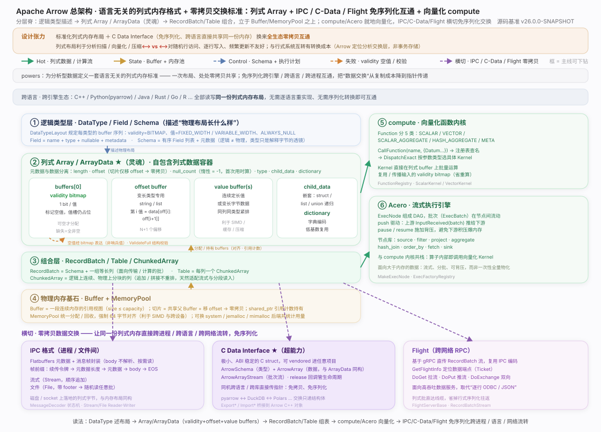
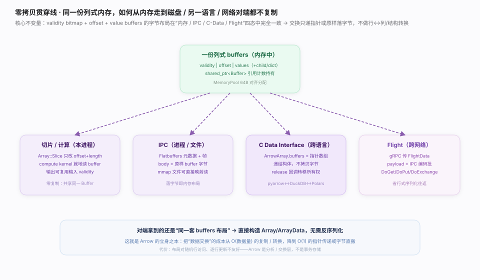
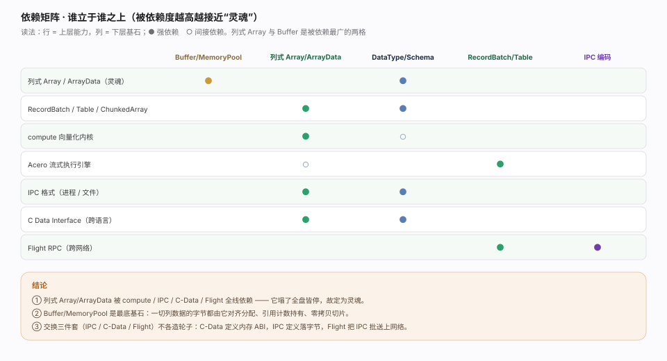
v26.0.0-SNAPSHOT，本地克隆后按 grep -n 逐处核实行号）：array/data.h:85（ArrayData）、buffer.h:52（Buffer）、memory_pool.h:109（MemoryPool）、c/abi.h:66（ArrowArray）、ipc/message.h:47（Message）、compute/function.h:142（Function）。jemalloc / mimalloc 后端通常优于系统 malloc（碎片、ReleaseUnused），可按负载切换并用 bytes_allocated() 监控。Array::Slice / Buffer 切片零拷贝，避免不必要的 CopySlice。release 回调转移所有权，不拷贝缓冲字节。| 维度 | Arrow 落点 | 代表主线 |
|---|---|---|
| 格式核心·数据 | 列式 Array/ArrayData（validity+offset+value buffers） | 核心_列式内存格式 |
| 格式核心·类型 | DataType/Field/Schema + DataTypeLayout | 核心_类型系统与Schema |
| 格式核心·内存 | Buffer + MemoryPool（64B 对齐 / 引用计数） | 核心_Buffer与内存池 |
| 格式核心·组合 | RecordBatch / Table / ChunkedArray | 核心_RecordBatch与Table |
| 交换·进程/文件 | IPC（Flatbuffers 元数据 + 消息帧） | 交换_IPC格式 |
| 交换·跨语言 | C Data Interface（ABI 稳定 C struct） | 交换_CData接口 |
| 交换·跨网络 | Flight（gRPC 传 RecordBatch 流） | 交换_Flight |
| 计算·向量化 | compute Function/Kernel（CallFunction） | 计算_compute内核 |
| 计算·流式 | Acero ExecNode DAG（push + 背压） | 引擎_Acero流式执行 |
| 对照点 | Arrow | 相似系统 | 关键差异 |
|---|---|---|---|
| 列式布局 | 内存中的列式标准 | Parquet / ORC 磁盘列式 | Arrow 是内存格式，无编码 / 压缩解码开销，可直接计算 |
| 跨语言交换 | C Data Interface 递指针 | Protobuf / FlatBuffers 序列化 | Arrow 免序列化，同机零拷贝直接共享 |
| 计算 | compute kernel / Acero | 各引擎自研算子 | Arrow 提供可复用的向量化算子与流式框架 |
| 数据服务 | Flight RPC | ODBC / JDBC 逐行 | Flight 列式批直达线缆，省行式往返 |
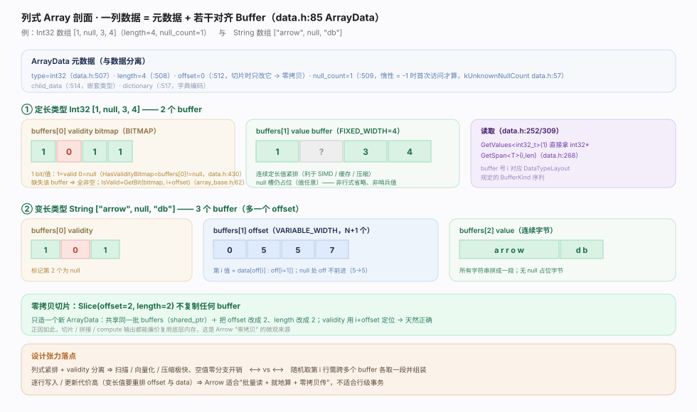
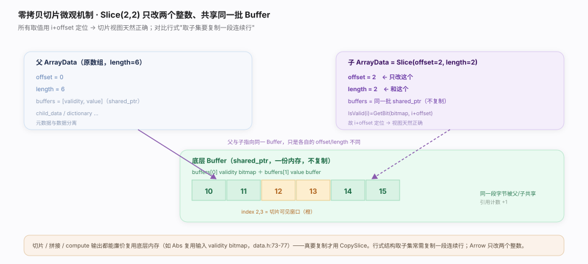
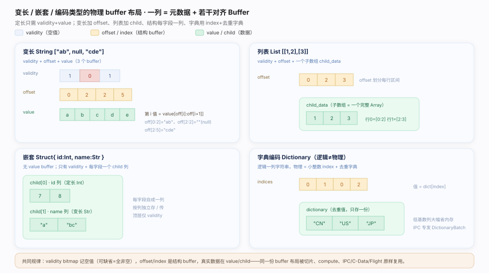
ArrayData（cpp/src/arrow/array/data.h:85），由强类型只读访问器 Array（cpp/src/arrow/array/array_base.h:53）封装。三类缓冲：buffers[0] validity bitmap（空值，1 bit/值）、offset buffer（变长类型）、value buffer(s)（实际值）；元数据 length/offset/null_count 与数据分离，切片只移 offset 即零拷贝。核实基准：data.h、array_base.h。GetValues(i, 0) 再手动施加 bit offset（data.h:299-307 注释），否则结果错误。buffers[0]==nullptr 表示无 validity bitmap = 全非空；不能假设总有 bitmap。Array 是不可变只读视图（array_base.h:42-43），可变访问只应在初始填充 ArrayData 时进行（data.h:79-84）。| 类型族 | buffer 序列 | 说明 |
|---|---|---|
| 定长（Int/Float/…） | validity + values | value 定宽紧排，null 槽占位 |
| 变长（String/Binary） | validity + offset + values | 第 i 值 = data[off[i]:off[i+1]] |
| StringView/BinaryView | validity + views + 多个 data | view=16B（kInlineSize=12 内联短串），长串指向 data buffer |
| List | validity + offset + child_data | 子元素在 child，offset 划分每行 |
| Struct | validity + child_data（每字段一列） | 无 value buffer，字段各自成列 |
| Union | type_ids(+offset) + child_data | 无顶层 validity，逻辑空值 |
| Dictionary | indices 的 buffers + dictionary | 低基数值复用，dictionary 存去重值 |
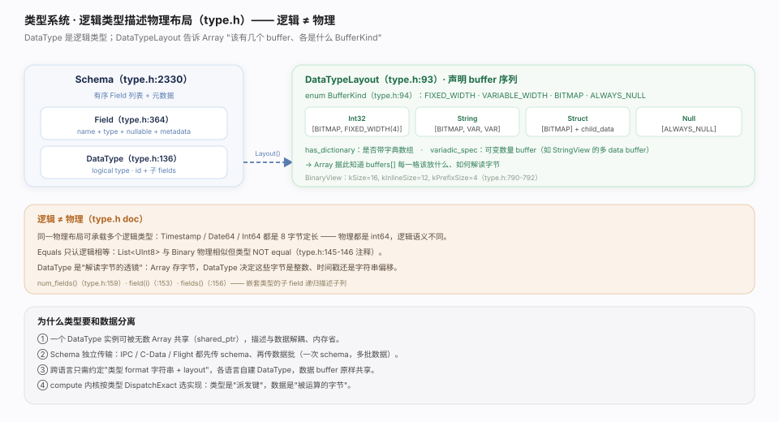
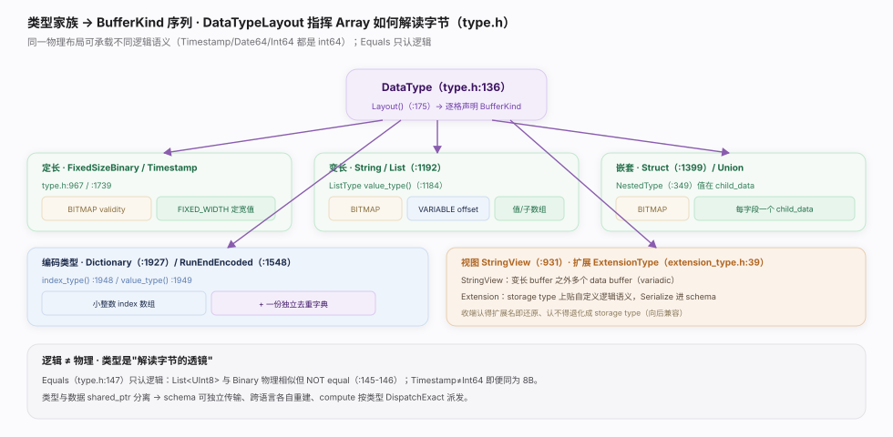
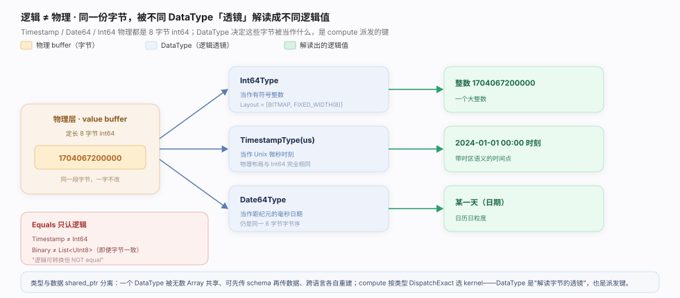
DataType（cpp/src/arrow/type.h:136）是逻辑类型，Field（type.h:364）= name+type+nullable+metadata，Schema（type.h:2330）= 有序 Field 列表 + 元数据。关键：DataTypeLayout（type.h:93）把逻辑类型翻译成"该有几个 buffer、各是什么 BufferKind"，让 Array 知道如何解读字节。逻辑 ≠ 物理。核实基准：type.h。DataType 只描述布局与语义，数据在 Array 的 buffers；两者 shared_ptr 解耦。Equals 认逻辑；Timestamp≠Int64、Binary≠List<UInt8>，即便字节布局一致。nullable 是 Field（schema 层）的属性；实际是否有空值看 ArrayData 的 validity bitmap。| 类别 | 代表类型（锚点） | buffer 布局要点 |
|---|---|---|
| 定长 | FixedSizeBinaryType（type.h:967）、TimestampType（type.h:1739） | [validity, 定宽值] |
| 嵌套基类 | NestedType（type.h:349） | 有子 Field，值在 child_data |
| 列表 | ListType（type.h:1192，value_type() type.h:1184） | [validity, offset] + 一个子数组 |
| 映射 | MapType（type.h:1323，key_field type.h:1344 / item_field type.h:1347） | List<Struct<key,value>> 的特化 |
| 结构 | StructType（type.h:1399，GetFieldByName type.h:1417 / GetFieldIndex type.h:1424） | [validity] + 每字段一个子数组 |
| 联合 | SparseUnionType（type.h:1503）、DenseUnionType（type.h:1532） | type_ids（+ dense 的 offset） |
| 字典编码 | DictionaryType（type.h:1927，index_type() type.h:1948 / value_type() type.h:1949 / ordered() type.h:1951） | index 数组 + 独立字典 |
| 游程编码 | RunEndEncodedType（type.h:1548，value_type() type.h:1564） | run_ends + values 两子数组 |
| 视图型 | StringViewType（type.h:931） | 变长 buffer 之外多个 data buffer（variadic） |
| 收益 | 机制 |
|---|---|
| 内存省 | 一个 DataType（shared_ptr）被无数 Array 共享 |
| 独立传输 | IPC/C-Data/Flight 先传 schema、再传多批数据 |
| 跨语言 | 约定 format 字符串 + layout，各语言自建 DataType，buffer 原样共享 |
| 派发 | compute 按类型 DispatchExact 选 kernel，数据是被运算的字节 |
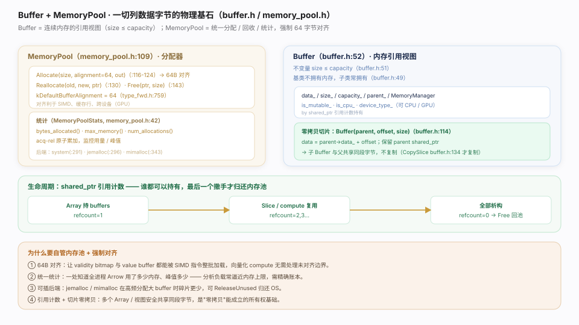
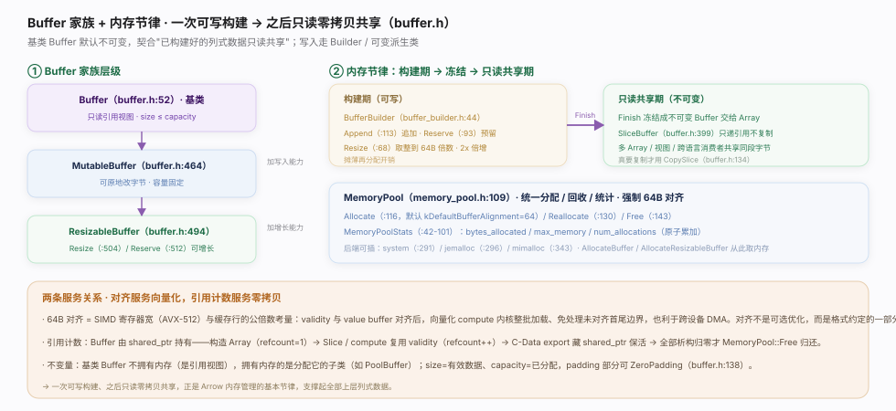
Buffer（cpp/src/arrow/buffer.h:52）是一段连续内存的引用视图（size ≤ capacity），MemoryPool（cpp/src/arrow/memory_pool.h:109）统一分配 / 回收 / 统计并强制 64 字节对齐。Array 的每个 buffer 都是一个 shared_ptr<Buffer>；切片共享父 buffer 即零拷贝。核实基准：buffer.h、memory_pool.h、type_fwd.h。Buffer 只是引用视图、不拥有；拥有内存的是分配它的子类（如 PoolBuffer）。Buffer(parent, offset, size) / Array::Slice 零拷贝共享；只有 CopySlice（buffer.h:134）才真复制。size 是有效数据字节、capacity 是已分配字节，size ≤ capacity；padding 部分可 ZeroPadding（buffer.h:138）。| 角色 | 类 / 函数（锚点） | 可写 | 可变容量 |
|---|---|---|---|
| 只读视图 | Buffer（buffer.h:52） | 否 | 否 |
| 定容可写 | MutableBuffer（buffer.h:464） | 是 | 否 |
| 可增长 | ResizableBuffer（buffer.h:494，Resize :504 / Reserve :512） | 是 | 是 |
| 零拷贝切片 | SliceBuffer（buffer.h:399）/ SliceMutableBuffer（buffer.h:433） | 视父 | 否 |
| 增量构建 | BufferBuilder（buffer_builder.h:44） | 是 | 是（倍增） |
| 场景 | Buffer 引用计数行为 |
|---|---|
| 构造 Array | Array 持 buffers，refcount=1 |
| Array::Slice | 新 ArrayData 共享同批 Buffer，refcount++ |
| compute 复用输入 validity | 输出 Array 持有同一 bitmap Buffer，refcount++ |
| C-Data Export | private_data 藏 shared_ptr 保活，release 时 refcount-- |
| 全部析构 | refcount=0 → 调 MemoryPool::Free 归还 |
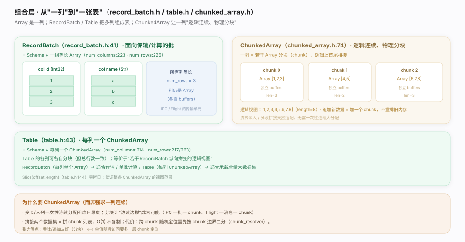
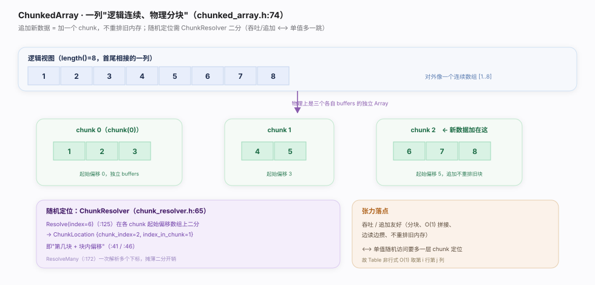
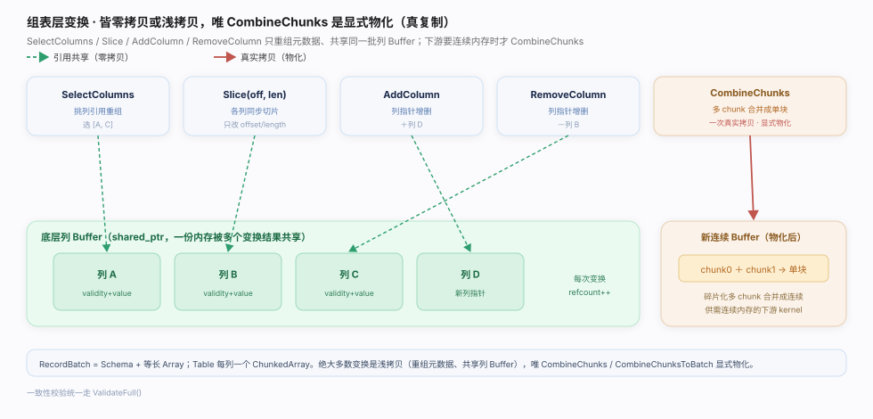
RecordBatch（cpp/src/arrow/record_batch.h:41）= Schema + 一组等长 Array（面向传输 / 单批计算）；Table（cpp/src/arrow/table.h:43）= Schema + 每列一个 ChunkedArray；ChunkedArray（cpp/src/arrow/chunked_array.h:74）让一列"逻辑连续、物理分块"。核实基准：record_batch.h、table.h、chunked_array.h。| 操作 | 源码锚点 | 是否复制 buffer |
|---|---|---|
RecordBatch::Slice | record_batch.h:256 | 否，各列 Array 切片共享父 buffer |
RecordBatch::SelectColumns | record_batch.h:269 | 否，挑选列引用重组 |
RecordBatch::AddColumn / RemoveColumn | record_batch.h:187 / :214 | 否，列指针增删 |
RecordBatch::ToStructArray | record_batch.h:91 | 否，视作一个 struct Array 视图 |
Table::Slice | table.h:141 | 否，收窄各 ChunkedArray 视图 |
Table::SelectColumns | table.h:175 | 否，挑列 |
Table::CombineChunks | table.h:247 | 是，多 chunk 合并成单 chunk（显式物化） |
ChunkedArray::View | chunked_array.h:161 | 否，逐 chunk 重解释类型 |
| 维度 | RecordBatch | Table |
|---|---|---|
| 每列结构 | 单个 Array | ChunkedArray（多 chunk） |
| 典型用途 | 传输 / 单批向量化计算 | 承载全量大数据集 |
| 行数来源 | 显式 num_rows，列等长 | 各列 chunk 总和一致 |
| IPC/Flight | 是传输的最小批单元 | 拆成多个 RecordBatch 传 |
| 拼接 | 纵向拼多个 batch | 拼 ChunkedArray 的 chunk 列表 |
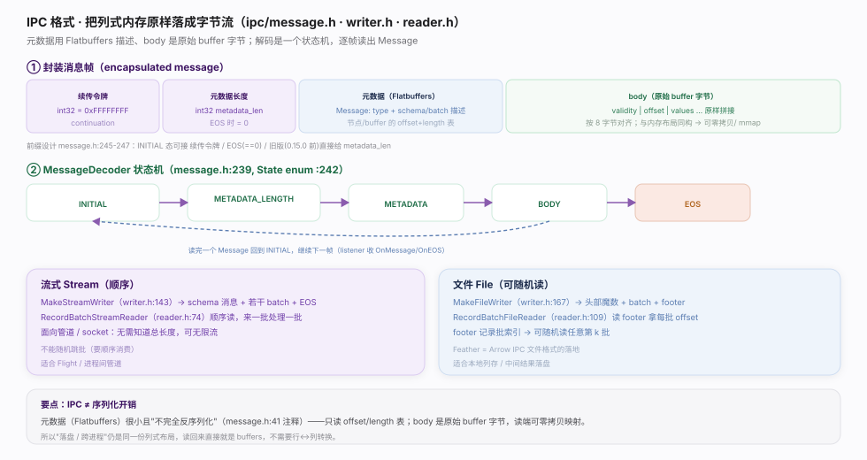
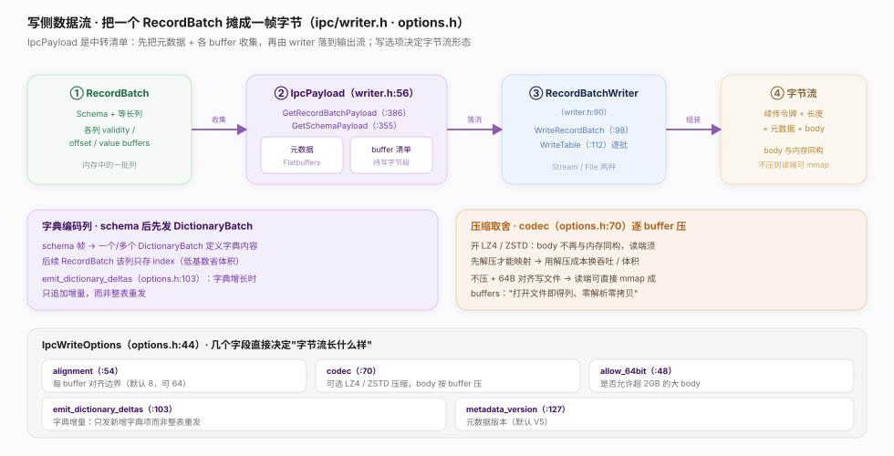
Message（cpp/src/arrow/ipc/message.h:47）封装一帧；MessageDecoder（message.h:239）是逐帧解码状态机。两种形态：流式（顺序）与文件（带 footer、可随机读）。核实基准：ipc/message.h、ipc/writer.h、ipc/reader.h。| 选项 | 锚点 | 作用 |
|---|---|---|
alignment | options.h:54 | 每个 buffer 的对齐边界（默认 8 字节，也可 64） |
codec | options.h:70 | 可选 LZ4 / ZSTD 压缩，body 按 buffer 压 |
allow_64bit | options.h:48 | 是否允许超 2GB 的大 body |
emit_dictionary_deltas | options.h:103 | 字典增量：只发新增字典项而非整表重发 |
metadata_version | options.h:127 | 元数据版本（默认 V5） |
| 维度 | 流式 Stream | 文件 File |
|---|---|---|
| Writer | MakeStreamWriter（writer.h:143） | MakeFileWriter（writer.h:167） |
| Reader | RecordBatchStreamReader（reader.h:74） | RecordBatchFileReader（reader.h:109） |
| 结构 | schema 消息 + 若干 batch + EOS | 魔数 + batch + footer（批索引） |
| 访问 | 顺序消费，来一批处理一批 | footer 记 offset → 随机读第 k 批 |
| 场景 | 管道 / socket / Flight，可无限流 | 本地列存 / 中间结果落盘（Feather） |
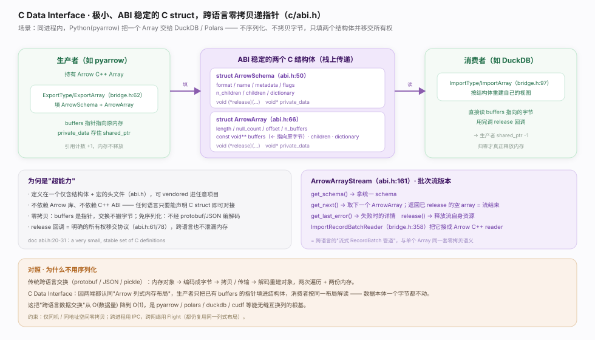
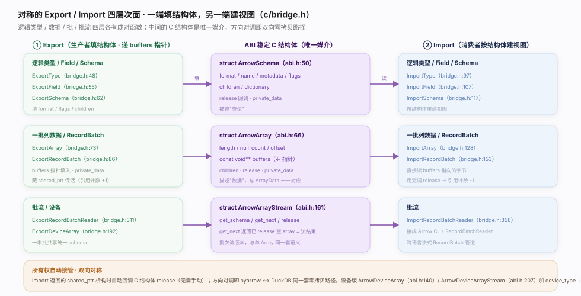
cpp/src/arrow/c/abi.h），让不同语言 / 不同库在同一进程内零拷贝、免序列化地交换列式数据。两个核心结构体 ArrowSchema（abi.h:50，类型）+ ArrowArray（abi.h:66，数据）与 ArrayData 一一对应；ArrowArrayStream（abi.h:161）是批次流版本。核实基准：c/abi.h、c/bridge.h。release 回调是所有权移交协议（abi.h:61/78），消费者用完必须调，否则生产者的引用计数不减、内存泄漏。| 层次 | Export（生产者填） | Import（消费者读） |
|---|---|---|
| 逻辑类型 | ExportType bridge.h:48 | ImportType bridge.h:97 |
| Field | ExportField bridge.h:55 | ImportField bridge.h:107 |
| Schema | ExportSchema bridge.h:62 | ImportSchema bridge.h:117 |
| Array（一批列数据） | ExportArray bridge.h:73 | ImportArray bridge.h:128 |
| RecordBatch | ExportRecordBatch bridge.h:86 | ImportRecordBatch bridge.h:153 |
| 批流 | ExportRecordBatchReader bridge.h:311 | ImportRecordBatchReader bridge.h:358 |
| 批流结构 | ArrowArrayStream（abi.h:161） | get_schema/get_next/release |
| 设备（GPU 等） | ExportDeviceArray bridge.h:192 | ArrowDeviceArray abi.h:140 |
| 环节 | 传统（protobuf/JSON/pickle） | C Data Interface |
|---|---|---|
| 生产端 | 遍历对象 → 编码成字节流 | 只填结构体、递 buffers 指针 |
| 传输 | 拷贝 / 写入通道 | 同地址空间，无拷贝 |
| 消费端 | 解码字节 → 重建对象 | 按同一布局直接解读指针 |
| 复杂度 | O(数据量)，两份内存 | O(1)，共享一份内存 |
| 前提 | 双方约定 schema/proto | 双方都认 Arrow 列式内存布局 |
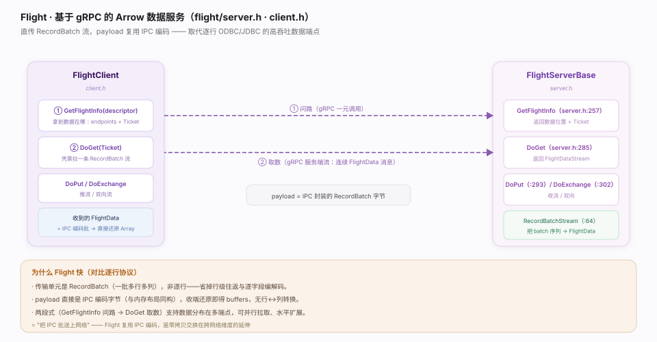
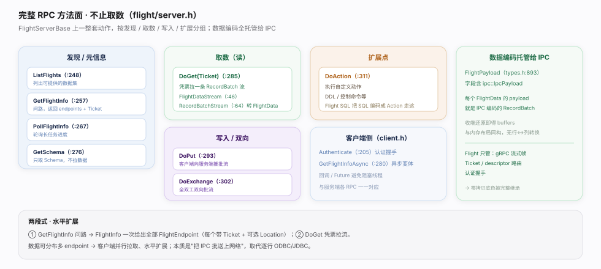
FlightServerBase（cpp/src/arrow/flight/server.h）暴露 GetFlightInfo/DoGet/DoPut/DoExchange；FlightClient（cpp/src/arrow/flight/client.h）对应调用。定位是取代"逐行 ODBC/JDBC"的高吞吐数据端点。核实基准：flight/server.h、flight/client.h。| RPC | 源码锚点 | 作用 |
|---|---|---|
ListFlights | server.h:248 | 列出服务端可提供的数据集（发现） |
GetFlightInfo | server.h:257 | 按 descriptor 问路，返回 endpoints + Ticket |
PollFlightInfo | server.h:267 | 轮询长任务的执行进度（结果逐步 ready） |
GetSchema | server.h:276 | 只取某数据集的 Schema，不拉数据 |
DoGet | server.h:285 | 凭 Ticket 拉一条 RecordBatch 流 |
DoPut | server.h:293 | 客户端向服务端推一条批流 |
DoExchange | server.h:302 | 全双工双向批流（可边推边收） |
DoAction | server.h:311 | 执行自定义动作（DDL / 控制命令等扩展点） |
| 对比项 | ODBC/JDBC 逐行 | Arrow Flight |
|---|---|---|
| 传输单元 | 一行（甚至一字段） | RecordBatch（一批多行多列） |
| 编解码 | 逐字段序列化 / 反序列化 | payload 是 IPC 字节，收端直接还原 buffers |
| 往返 | 行级往返多 | 批级流，一次拉多批 |
| 布局 | 行式，客户端常要转列 | 全程列式，收到即可向量化计算 |
| 扩展 | 单连接单流 | 多 endpoint 可并行拉取 |
| 维度 | 机制 | 复用关系 |
|---|---|---|
| 同进程跨语言 | C Data Interface（递指针） | 定义内存 ABI |
| 跨进程 / 文件 | IPC（同构字节） | 定义落字节格式 |
| 跨网络 | Flight（gRPC 传批） | payload = IPC 编码 |
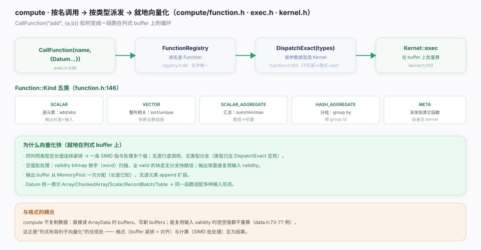
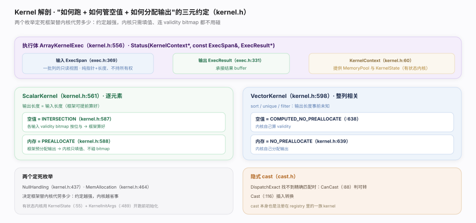
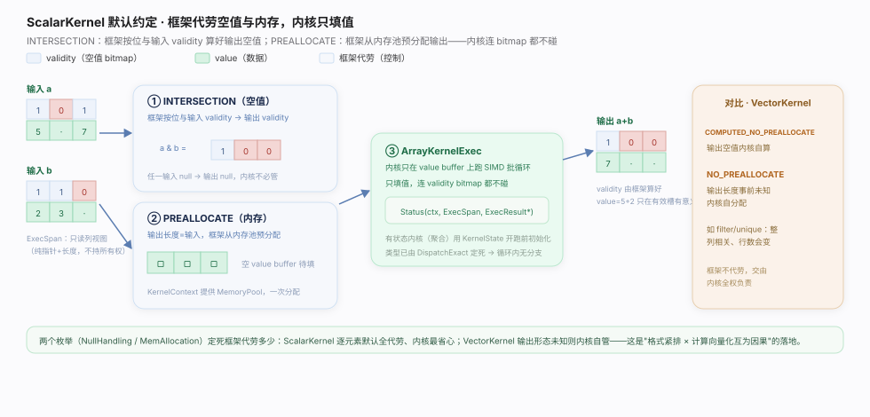
CallFunction（cpp/src/arrow/compute/exec.h:436）按名从 FunctionRegistry（cpp/src/arrow/compute/registry.h:46）取 Function（cpp/src/arrow/compute/function.h:142），DispatchExact（function.h:193）按参数类型选 Kernel（cpp/src/arrow/compute/kernel.h:510），Kernel 直接在列式 buffer 上批量运算。核实基准：compute/function.h、exec.h、kernel.h、registry.h。Datum 统一裹 Array/ChunkedArray/Scalar/RecordBatch/Table，函数按形态处理。| 约定 | 枚举（锚点） | ScalarKernel 默认 | VectorKernel 默认 |
|---|---|---|---|
| 空值处理 | NullHandling（kernel.h:437） | INTERSECTION（kernel.h:587，交集输入 bitmap） | COMPUTED_NO_PREALLOCATE（kernel.h:638） |
| 输出内存 | MemAllocation（kernel.h:464） | PREALLOCATE（kernel.h:588，框架预分配） | NO_PREALLOCATE（kernel.h:639） |
| 加速点 | 机制 |
|---|---|
| SIMD 批处理 | 同列同类型定长值连续紧排，一条指令算多个值 |
| 无虚调用 / 无分支 | 类型已在 DispatchExact 定死，循环内无逐行类型判断 |
| 空值快路径 | validity bitmap 按 word 扫描，全 valid 块走无分支路径 |
| validity 复用 | 输出常直接复用输入 bitmap（data.h:73-77 的 Abs 例），空值不重算 |
| 一次分配输出 | 输出长度已知，从 MemoryPool 一次分配，无逐元素扩容 |
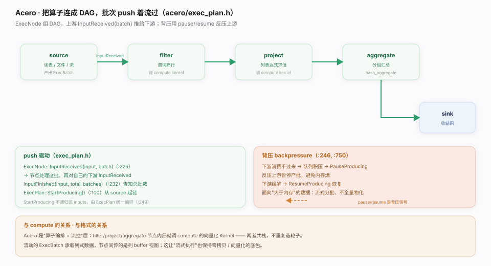
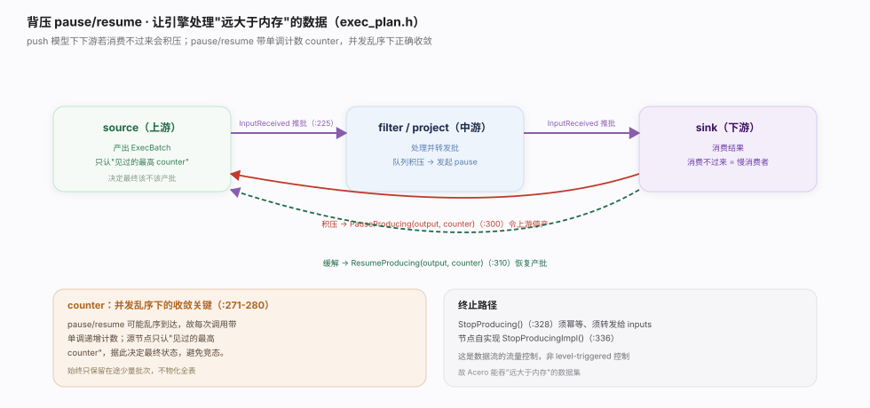
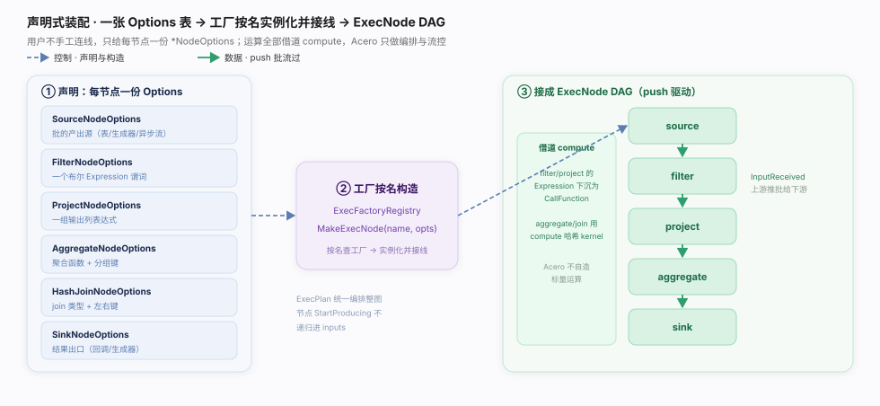
ExecBatch）在节点间 push 着流过。ExecNode（cpp/src/arrow/acero/exec_plan.h:125）是算子基类，InputReceived（exec_plan.h:225）是 push 入口；ExecPlan（exec_plan.h:54）编排整图。面向"大于内存"的数据：分批 + 背压，而非一次性全量物化。核实基准：acero/exec_plan.h、acero/*_node.*。InputReceived 推给下游，非下游拉。| 节点 | Options 锚点 | 语义 |
|---|---|---|
| source | options.h:90（SourceNodeOptions） | 批的产出源（表 / 生成器 / 异步流） |
| filter | options.h:250（FilterNodeOptions） | 一个布尔 Expression 谓词 |
| project | options.h:281（ProjectNodeOptions） | 一组输出列表达式 |
| aggregate | options.h:335（AggregateNodeOptions） | 聚合函数 + 分组键 |
| order_by | options.h:539（OrderByNodeOptions） | 排序键与升降序 |
| hash_join | options.h:564（HashJoinNodeOptions） | join 类型 + 左右键 |
| sink | options.h:403（SinkNodeOptions） | 结果出口（回调 / 生成器） |
| 层 | 职责 | 复用 |
|---|---|---|
| Acero | 算子编排 + 流控（DAG / push / 背压） | 不自造标量运算 |
| compute | 向量化 Kernel（add/filter 表达式…） | filter/project 节点内部直接调 |
| 格式 | ExecBatch 承载列式 buffer 视图 | 节点间传视图，保持零拷贝 |